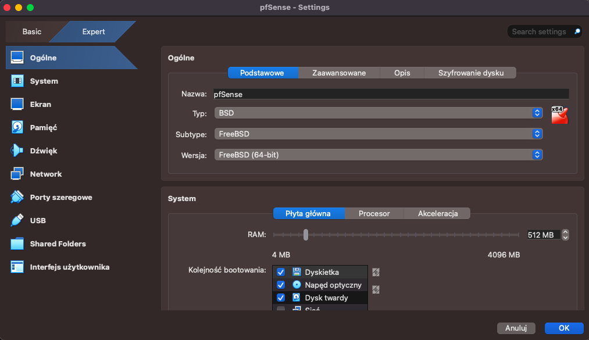

Pobieranie i instalacja pfSense CE (przykład na wersji 2.7.0)
Pobieranie nowych wersji pfSense wymaga założenia konta na platformie Netgate oraz nie da się już pobrać standalone iso dla pfSsenseCE tylko trzeba pobierać combo z wersją pfSense plus. :3 Dlatego w tym poradniku pokaże z kąd pobrać oraz jak zainstalować starszą wersje pfSense , nie zalecam używać tego do faktycznych zastosowań jako router ( ogólnie personalnie o wiele bardziej polecam OpenWRT do takich zastosowań) jeśli potrzebujesz pfSense na zajęcia w szkole to jest to poradnik dla ciebie
Pobieranie pliku ISO pfSense z InternetArchive
W zależności od tego jakiej wersji potrzebujesz tu jest kilka linków do różnych wersji pfSense:
https://archive.org/download/pfsense-ce-release-amd64_202112https://archive.org/download/pfsense-ce-2.7.0-release-amd64_202308
https://archive.org/download/pfSense-CE-2.7.1-RELEASE-amd64
(Wiadomo pobieramy tylko plik iso reszta plików nas nie obchodzi) Zalecam przeczytać cały poradnik zanim zacznie się go wykonywać ( lub poprostu przejrzeć żeby nie pominąć czegoś) Instalacja pfSense na maszynie wirtualnej ( Przykład na Virtualbox) Odpalamy VirtualBoxa i klikamy nowa maszyna
Wpisujemy nazwę Maszyny wybieramy wybieramy typ systemu BSD i subtype FreeBSD 64bit
Oraz wybieramy miejsce gdzie znajduje się plik ISO
Klikamy zakładkę na Hardware zmieniamy ram na 512MB ram nie ma dużego znaczenia dla tego systemu ale 512MB to taki safezone gdzie system chodzi szybko i nie zajmuje dużo pamięci RAM.
Klikamy zakończ i przechodzimy do ustawień wirtualnej maszyny
Wybieramy zakładkę Network gdzie zmieniamy karty sieciowe, ja wybieram na kartę 1 kartę bridged czyli używanie fizycznej karty sieciowej jako karta do wirtualnej maszyny a na 2 kartę kartę wewnętrzną która służy do komunikacji pomiędzy maszynami wirtualnymi na jednym komputerze.
Następnie klikamy okay i odpalamy maszynę wirtualną aby przejść przez jej setup. Czekamy aż skończy się bootować
Virtual box spyta się o przechwytywanie klawiatury. kliknij przechwyć aby wyłączyć przechwytywanie kliknij przycisk hosta (na windows domyślnie prawy alt , na MacOS domyślnie lewy command) Klikamy ENTER aby zaakceptować licencje copywrite pfSense
Klikamy enter aby rozpocząć instalacje pfsense
wybieramy rodzaj partycjonowania dysku (jest to tutorial podstaw więc nie będę wchodził w co to robi bo no jeśli to ogarniasz to ten tutorial prawdopodobnie nie jest skierowany do ciebie xD) nie ruszamy ustawień tutaj więc porostu klikamy enter na Auto ZFS
Weryfikujemy ustawienia ( w wypadku instalowania tego na vm najlepiej tu nic nie dotykać jeśli nie wiesz co robić) Klikamy enter
klikamy enter na stripe - no redundancy (nawet jakbyśmy chcieli coś tu zmienić to by się nie dało ponieważ ta vm ma tylko 1 dysk)
Zaznaczamy dysk Spacją na którym chcemy zainstalować pfSense UWAGA!!! Jeśli robisz to na fizycznej maszynie a nie na vm to Z FORMATUJE TWÓJ DYSK !!!!!!!!! Po zaznaczeniu klikamy enter na OK aby kontynuować

pfSense nas też ostrzega o tym że dany dysk zostanie z formatowany ( na vm to nic nie zrobi ponieważ jest to dysk wirtualny) ALE UWAGA NA FIZYCZNYCH MASZYNACH ŻEBY NIE USUNĄĆ SOBIE WINDOWSA MISSCLICKIEM Klikamy enter aby potwierdzić

Czekamy aż pfSense się zainstaluje (nie powinno to zająć dużo czasu)
Gdy pojawi się to okienko zanim klikniemy reboot klikamy w to logo płyty w prawym dolnym rogu i klikamy remove disk from Virtual Drive Klikamy wymuś odmontowanie. Klikamy reboot.
czekamy chwile aż system się zbootuje i przywita nas taki tekst jak na obrazku powyżej Z funkcji które będziemy teraz omawiać aka które przydadzą się w szkole to 2 Set interface(s) IP address. Służy do ustawiania adresów IP na kartach sieciowych Wpisujemy 2 i klikamy enter
Wybieramy który interface chcemy skonfigurować. WAN to interface z którego pfSense otrzymuje internet zazwyczaj zostawiamy na DHCP i nic nie zmieniamy w początkowych zadaniach. LAN to interface wyjściowy który daje internet innym urządzenią już po routingu zrobionym przez pfSense. W tym wypadku skonfigurujemy LAN na adres 192.168.2.1/24 Wpisujemy 2 i klikamy enter
dostaniemy pytanie czy chcemy skonfigurować adres ip przy użyciu DHCP, wpisujemy n jako zaprzeczenie ponieważ konfigurujemy adres statycznie.
W polu tekstowym wpisujemy adres jaki chcemy dać dla Gate tego routera , w tym tutorialu jest to 192.168.2.1 I klikamy enter

W tym momencie pfSense zapyta nas się o maskę sieci , chcemy otrzymać adres 192.168.2.1/24 Więc jako maskę wpisujemy 24
Teraz pyta się o adres upstream , ale w tym poradniku tego nie poruszam ponieważ w tym zastosowaniu to się nie przyda więc klikamy enter bez wpisywania niczego
W tym polu wyboru wpisujemy n i klikamy enter ponieważ ten tutorial dotyczy tylko IPv4 (sam nie umiem w IPv6 i nie ma z tego prawie zadań na inf02)
klikamy enter bez wpisywania niczego ponieważ nie chcemy mieć adresu IPv6
Robienie serwera DHCP na pfSense. Jeśli chcemy miec DHCP server to klikamy Y i enter , jeśli chcemy sobie adresować komputery statycznie to klikamy N i enter. Na potrzebę tego tutoriala skonfigurujemy server DHCP na zakres 192.168.2.10-192.168.2.20
Wpisujemy początkowy adres zakresu czyli u nas 192.168.2.10 i klikamy enter

W kolejnym polu tekstowym wpisujemy końcowy adres zakresu czyli u nas 192.168.2.20 i klikamy enter Po kliknięciu enter wyskoczy okienko czy chcemy używać HTTP jako strony konfiguracji Do tego zastosowania jakie teraz robimy nie ma znaczenia czy damy Y czy N chociaż jeśli planujemy łączyć ten pfSense z nieco starszym systemem windows jak np. Windows Server 2012r2 to lepiej kliknąć Y żeby się nie musieć męczyć z popup okienkami na internet explorer.
I voilà w taki o to sposób skonfigurowałeś swojego pfSense :3